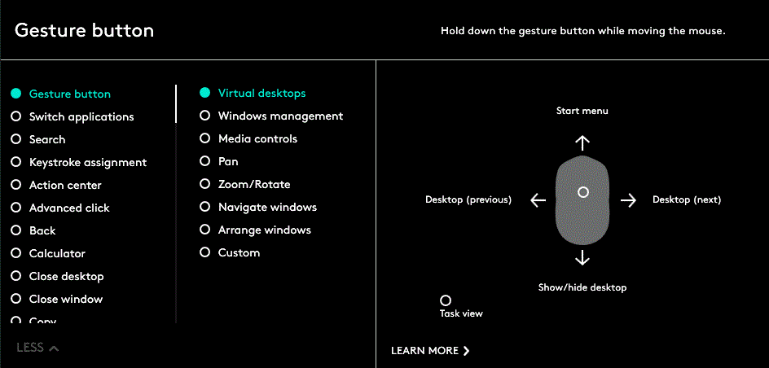
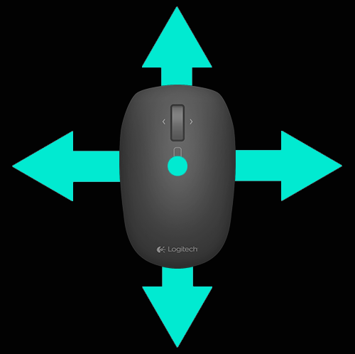

Gestos
La función Gestos facilita la interacción intuitiva con el sistema operativo y las aplicaciones.
Use gestos para ampliar documentos, navegar por páginas Web, girar imágenes, etc.
Logitech Options permite realizar diversos gestos con los ratones compatibles de Logitech.
Activar conjuntos de gestos
Haga clic en la ficha Ratón y, a continuación, en cualquiera de los botones resaltados.
Cuando en la lista de acciones de botón se selecciona Botón de gestos, los conjuntos de gestos disponibles aparecen a la derecha, junto con una ilustración del conjunto seleccionado.

Haga clic para seleccionar el botón para el gesto que desea activar. El conjunto seleccionado permanece activo hasta que se seleccione otro conjunto.
Nota: también puede asignar la acción mediante gestos a otros botones. Si la acción de gestos no está asignada a ningún botón, los gestos no están disponibles.
Realizar gestos
Para realizar un gesto, mantenga pulsado el botón de gestos mientras mueve el ratón hacia la izquierda, la derecha, arriba o abajo. Haga clic en el botón de gestos sin mover el ratón para realizar la acción relacionada.
